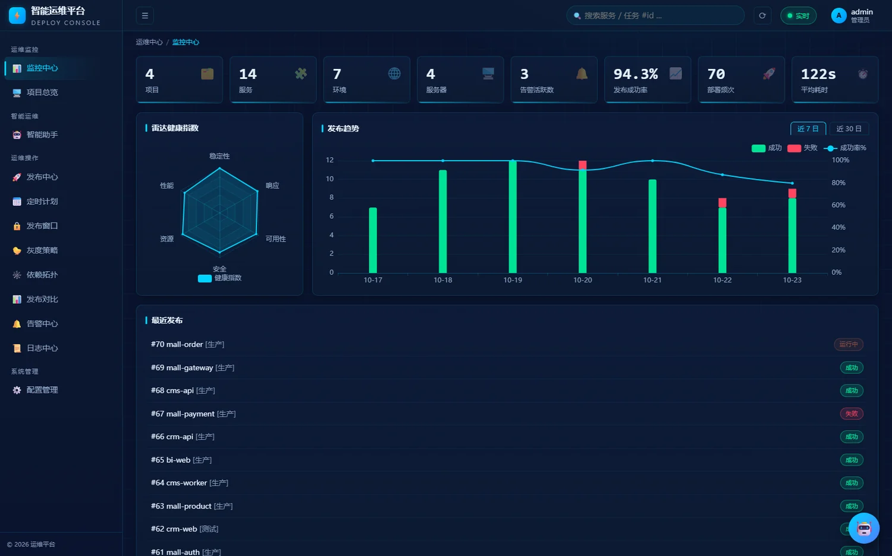
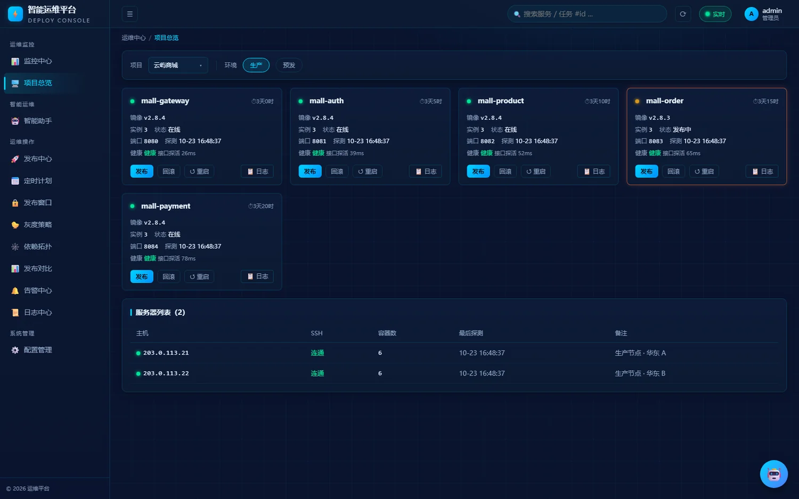
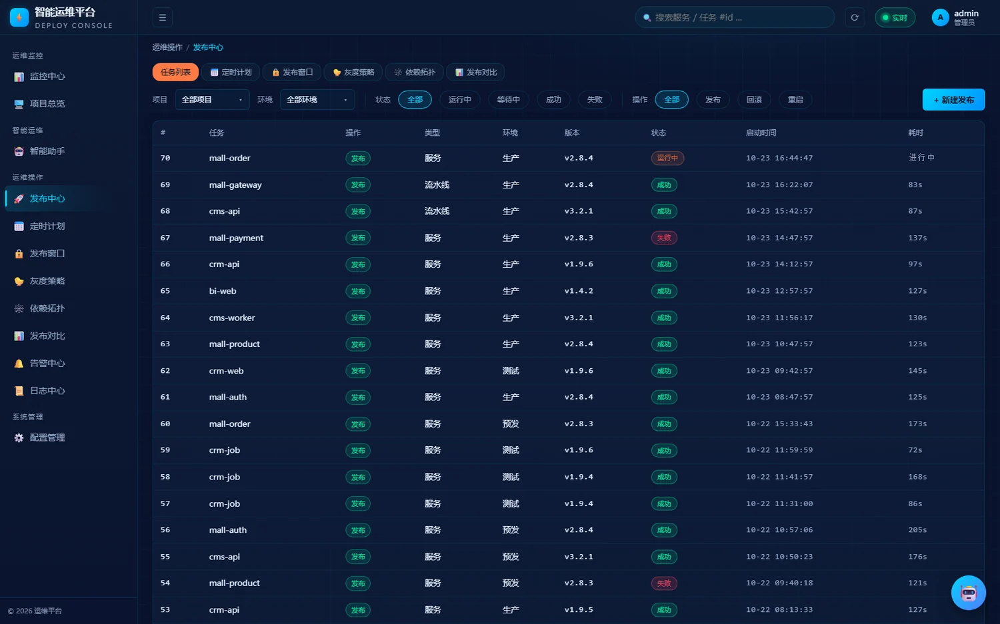
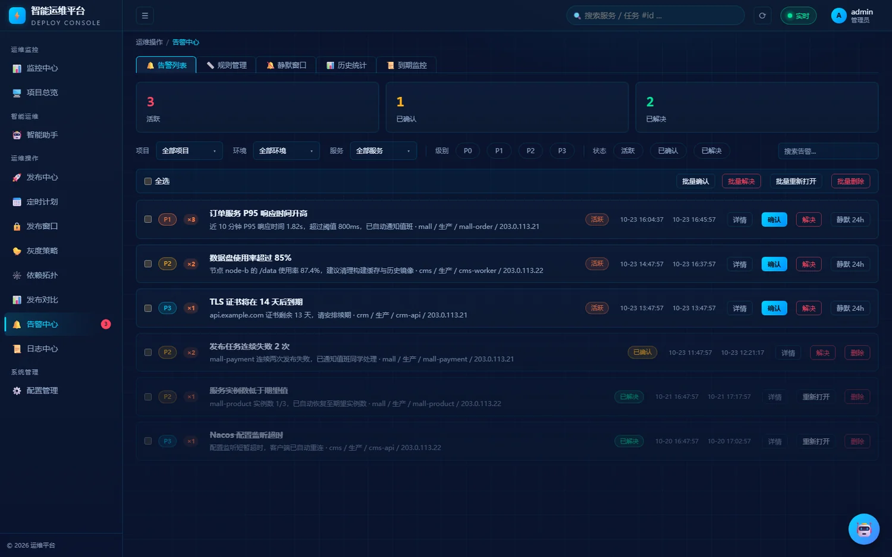
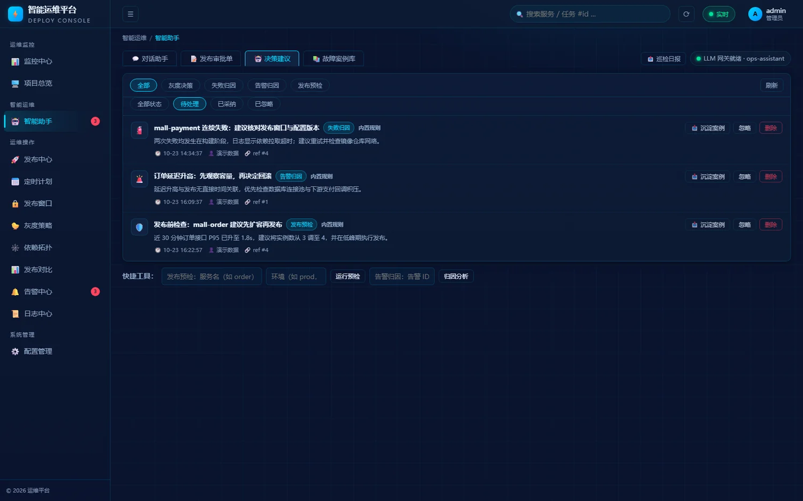

01
滚动发布与灰度
服务发布、多服务流水线、金丝雀灰度、定时计划与发布窗口。运行中可暂停、终止或回滚。
ROLLING / CANARY / SCHEDULE从构建、镜像、滚动发布，到健康检查与 Nacos 上下线——一条链路跑完。发布失败自动回滚，任务、日志与审计记录完整留下。
发布之外，它也是监控台。服务器资源、响应时间、告警与日志在同一套项目模型里，排障不用换工具。
服务或整条流水线排进队列后，平台按顺序完成构建、发布与探活，再处理注册中心上下线。任何一步失败，都能按版本回滚。
./deploy.sh --project mall --env prod --version v2.8.4
监控、告警、日志和配置不是四个独立工具。它们共享项目、环境、服务模型，排障时不需要在标签页之间拼线索。
服务发布、多服务流水线、金丝雀灰度、定时计划与发布窗口。运行中可暂停、终止或回滚。
ROLLING / CANARY / SCHEDULESSH 采集 CPU、内存、磁盘、网络、TCP、Docker 存储与 SSL 到期；响应时间保留历史趋势。进程服务另采 systemd 单元状态与每主机版本。
SSH PROBE / SSE PUSH指标、服务状态、日志关键词三类规则；六路通知；确认、解决、升级与静默窗口。
RULE / SILENCE / ESCALATE自然语言生成发布计划，人工审批后复用任务通道执行。49 个工具，支持 Web、CLI 与 MCP。
PLAN / APPROVE / AUDIT增量采集、关键词检索、上下文查看；进程服务日志走 journalctl 游标增量；项目、服务、环境、服务器与流水线统一配置。
FTS / CONTEXT / IMPORT管理员、操作员、只读三级权限，JWT 会话；关键操作写入审计，配置可导入导出。
RBAC / JWT / AUDIT四个最常用的工作面：监控、项目、发布、告警。下面的界面来自合成演示环境，不对应任何真实服务器。




在对话里描述目标，Agent 会结合服务状态、发布窗口与依赖生成计划；审批通过才创建任务。模型不可用时，规则引擎仍会给出归因与建议。
模型是可选项。支持任意 OpenAI 兼容网关；不配置也不影响发布、监控和告警。

Flask + SQLite 单机运行，SSH 直连目标服务器。项目配置、环境凭据和日志只保存在本机 data/platform.db，不经过第三方 SaaS。
内置 Python 3.12 运行时与全部依赖。无需 pip、无需安装开发环境。构建镜像时仍需本机具备 git / Maven / Docker。
127.0.0.1:5678；登录后强制修改初始密码。它面向的是一台到几十台服务器的自建环境，不是替代云厂商的整套 PaaS。
界面截图全部来自合成演示数据。展示页本身不收集任何运行数据。
data/platform.db。除非你主动配置外部 LLM 网关，否则运行链路不依赖第三方 SaaS。请像保护普通生产凭据一样保护这个数据库文件。